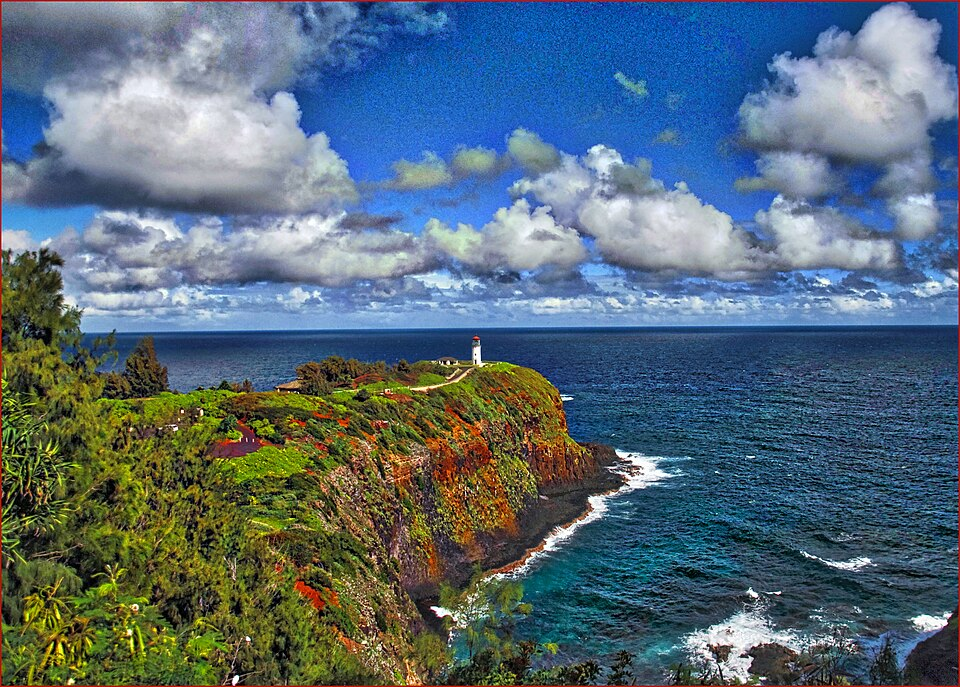

Kīlauea Lighthouse
Place: Kīlauea Lighthouse, Kīlauea Point, Kauaʻi
Type: Lighthouse / historic landmark / wildlife refuge
Story it tells: A lighthouse built to protect Pacific shipping that later became a symbol of conservation, connecting Hawaiʻi's maritime history, World War II, and one of the islands' most important seabird sanctuaries.

Kīlauea Lighthouse stands atop Kīlauea Point at the northernmost tip of Kauaʻi. Completed in 1913 as the Kīlauea Point Light Station, it was built to guide ships safely around the rugged coastline during an era when interisland commerce and Pacific shipping were rapidly expanding. The lighthouse takes its name from the surrounding ahupuaʻa of Kīlauea, generally translated as "much spreading" or "spewing." While the name is most famously associated with the active volcano on Hawaiʻi Island, on Kauaʻi it likely refers to the broad volcanic landscape and dramatic cliffs that rise above the ocean.
The federal government purchased the thirty-one-acre peninsula from the Kīlauea Sugar Plantation Company in 1909 for the token price of one dollar before Congress appropriated $75,000 to construct the station. Building on the isolated point presented extraordinary challenges. With no roads reaching the site, every load of cement, lumber, iron, and machinery arrived aboard the lighthouse tender Kukui. Because ships could not land directly on the rocky shoreline, workers erected a massive boom derrick nearly ninety feet above the surf to lift supplies from boats below before hauling them inland on a narrow-gauge railway. The 52-foot light tower itself was built of reinforced concrete, then considered a cutting-edge construction technique.
The station's most remarkable feature was its massive four-ton third-order Fresnel lens manufactured in Paris. Capable of projecting a beam roughly twenty-two miles out to sea (some claimed up to ninety miles when viewed from the air), the lens became one of the most powerful navigational aids in the Hawaiian Islands. When the intricate glass apparatus arrived, however, the instructions were in French, requiring an engineer to travel from Honolulu by steamship and horseback to translate and oversee its installation.
The lighthouse functioned as a small self-contained community. Three keeper's houses built from local blue volcanic stone stood beside the tower, where lighthouse keepers and their families lived year-round. Every three and a half hours, day and night, the keepers manually wound the weight-driven clockwork mechanism that slowly rotated the four-ton lens on a bed of liquid mercury. Samuel Apollo Amalu, the station's longest-serving keeper, later remarked that lighthouse keepers had to be mechanics, engineers, carpenters, painters, gardeners, and problem-solvers, maintaining every aspect of the isolated station without outside assistance.
Life at Kīlauea Point changed dramatically following the attack on Pearl Harbor. On December 7, 1941, the official station log recorded that "Condition One is in order… Kilauea Point light blacked out." Extinguishing the beacon prevented enemy ships and submarines from using it as a navigational aid. The lighthouse grounds became part of Hawaiʻi's coastal defense system, with military personnel occupying nearby bunkers to monitor the Pacific and test early radar and navigation equipment. Ironically, the technologies refined during World War II would eventually reduce the need for traditional lighthouses altogether.
The station remained staffed until 1976, when the Coast Guard automated the light and retired the original Fresnel lens. Around the same time, scientists recognized that the powerful rotating beacon unintentionally endangered native seabirds. Species such as the ʻAʻo (Newell's Shearwater) and ʻUaʻu Kani (Wedge-tailed Shearwater), which navigate by moonlight and stars, frequently became disoriented by the brilliant light, circling until they collapsed from exhaustion. The lower-intensity automated beacon greatly reduced this problem, and in 1985 the area became the Kīlauea Point National Wildlife Refuge to protect nesting seabirds and other native wildlife.
Native Hawaiians traditionally used the peninsula's rocky shoreline to gather ʻopihi and harvest sea salt from natural kāheka (salt pans) carved into the lava. The surrounding cliffs also provided nesting habitat for seabirds whose feathers were collected for chief regalia, while nearby lands supported the cultivation of kō (sugar cane) centuries before commercial plantations transformed the landscape.
In 2013, the historic light station was formally renamed the Daniel K. Inouye Kīlauea Point Lighthouse in honor of the longtime United States senator whose support helped secure funding for its preservation. Today the property is jointly managed by the U.S. Fish and Wildlife Service, which oversees the historic lighthouse and refuge, and the U.S. Coast Guard, which continues to operate the modern navigational beacon. Visitors now come for nesting Red-footed Boobies, Laysan Albatrosses, and spectacular coastal views instead of just for the lighthouse itself, making Kīlauea Point one of the few places where Hawaiʻi's maritime history and natural history stand shoulder to shoulder both with preservation on the forefront.